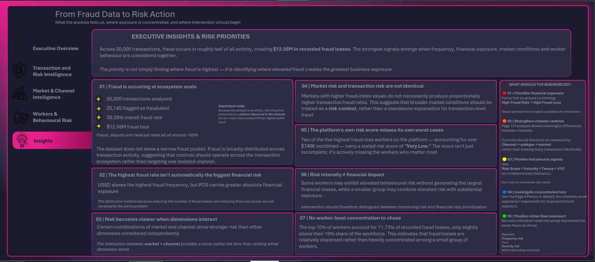

The solution
The formulas and measures on this page are from my project documentation and workbook, as I ran them. Every number traces to my dashboard pages, my README and documentation doc, and a direct profile of the shipped CSV files.
I built this in Excel, deliberately: Power Query for the load and cleaning layer, Power Pivot for a proper star schema in the data model, and DAX for every KPI as a live measure. The result is a five-page dashboard where one slicer click filters every visual at once, which is what a model gives you and a pile of PivotTables does not. The five pages follow the investigation's order: the claim at face value, the formal frequency tests, the interaction lens, worker-level exposure, then the synthesis page with findings and priorities.
| Component | What I built it from | Role |
|---|---|---|
| fact_transactions | 50,000 rows, 15 fields | One row per wallet transaction: worker, date, channel, market, type, amount, outcome, three flags, velocity, fraud loss, processing time |
| dim_worker | 5,000 rows | Gig segment, account tenure, KYC tier, gender, age band, risk score, active status, preferred channel |
| dim_channel | 12 rows | Channel type and subtype, digital flag, reference fraud rate, internet requirement |
| dim_market | 4 rows | Country, currency, dominant channel, regulatory tier, FX rate, market fraud index |
| dim_date | 730 rows | Month, quarter, day of week, weekend and month-end flags |
| The report | 5 pages in Excel | Executive overview, transaction and risk intelligence, market and channel intelligence, workers and behavioural risk, insights and risk action center |
The relationships are the standard star, all four dimensions joining the fact on their keys (worker_id, date_id, channel_id, market_id) as many-to-one in Power Pivot. Building the model first is what made the statistical pages possible: the same fraud rate measure slices by any dimension, so the leaderboard and the twenty-cell heat map read off one definition.
The Power Query preparation
The load layer did four jobs before a single visual existed, and the fourth one changed the project.
Type correction: the flags and dates arrived as text in places, so I enforced proper types on load rather than trusting the CSV's apparent shapes.
Bucketing: I derived tenure bands (0-30 days, 31-90, 91-180, 181-365, 2+ years), velocity bands and risk-score bands in Power Query, because the brief's claims were phrased in bands (accounts under 90 days) and the tests needed comparable groupings.
Category validation: I compared every categorical column's observed values against the dictionary's documented list, which is how the mismatches surfaced: eight outcome categories against four documented, five channel labels against the documented lowercase set, fifteen gig segments against four, and a risk score running 0.002 to 99.96 against a generator spec that implies 0 to 1.
Flag-rate validation: fraud documented at 7% true, disputes at 5%, reversals at 8%; observed 50.29%, 50.07% and 49.90%. That check came before anything else and set the tone for everything after it.
One channel-table detail worth recording: the reference fraud-rate field is documented as a 0.02 to 0.15 rate, but the shipped values read 484 to 675. It is not a rate on any scale, so I did not use it as one. That field is part of the audit finding, not part of the analysis.
The statistical test layer
This is the part of the build I would defend in a review: every claim in the brief was tested formally, in Excel, with the formulas visible rather than buried in a script.
The chi-square test of independence asks whether a category and the fraud flag are statistically independent. I built the contingency table of observed counts, computed the expected table as (row total x column total) / grand total, and summed the squared deviations.
Chi-Square =
SUMPRODUCT((Observed_Range - Expected_Range)^2 / Expected_Range)
p-value =
CHISQ.DIST.RT(chi_square_stat, degrees_of_freedom)Then the step most dashboards skip: the effect size. At n = 50,000, chi-square returns a significant p-value for almost any non-zero difference, so I paired every test with Cramér's V and read the V, not the p.
Cramer's V = SQRT(Chi-Square / (N * MIN(rows - 1, cols - 1)))
< 0.10 negligible -> logged, not reported as a finding
0.10-0.30 weak -> worth a mention
0.30-0.50 moderate -> a real finding
> 0.50 strong -> headline materialFor the continuous candidates I coerced the boolean flag to 0/1 and used a direct Pearson correlation, which for a binary flag is the point-biserial correlation.
=CORREL(velocity_score_range, fraud_flag_as_0_1_range)
velocity score vs fraud flag: r = -0.001
processing time vs fraud flag: r = -0.002The concentration check got the same treatment. A standard Pareto of ranked fraud loss was extended with a persistence flag: workers appearing across multiple fraud events are real signal candidates, while a worker with one large loss event is statistically expected noise from the heavy-tailed loss distribution. That distinction is what keeps the dispersion finding honest, and it is also why I re-ran the concentration math directly: the top 10% of workers hold 20.35% of losses, which I would rather state exactly than round into a story.
The measures and the decisions inside them
Every KPI is a live DAX measure in the data model, so every card updates when a slicer moves. The definitions are deliberately plain, with the decisions in the denominators.
Total Transactions := COUNTROWS(fact_transactions)
Total Volume USD := SUM(fact_transactions[amount_usd])
Fraud Transactions :=
CALCULATE(COUNTROWS(fact_transactions),
fact_transactions[is_fraud_flagged] = TRUE())
Fraud Rate := DIVIDE([Fraud Transactions], [Total Transactions], 0)
Fraud Loss USD :=
CALCULATE(SUM(fact_transactions[fraud_loss_usd]),
fact_transactions[is_fraud_flagged] = TRUE())
Avg Fraud Loss per Fraud Txn :=
DIVIDE([Fraud Loss USD], [Fraud Transactions], 0)The denominator decision I care most about: Fraud Loss Rate divides fraud loss by total transaction volume, not by fraud volume. It answers how many cents of every dollar processed are exposed to fraud, which is the exposure question, not the per-event severity question. That one choice is what makes the USSD story readable: highest loss rate per dollar, lowest absolute loss, because the volume is a fifth of the other channels.
Fraud Loss Rate := DIVIDE([Fraud Loss USD], [Total Volume USD])Dispute Rate and Reversal Rate follow the same pattern as Fraud Rate, filtered on is_disputed and is_reversed. The lifecycle view on page two composes them: 50.00K transactions, 25.15K flagged, 25.04K disputed, 24.95K reversed, which is the coin-flip structure made visible.
DIVIDE with a zero fallback
Fraud Rate and the per-event averages use DIVIDE's third argument so an empty slicer selection shows a blank, not a division error.
Measures, not typed numbers
Every figure on the dashboard computes live. Nothing on those pages goes stale when a slicer or a refresh changes the context.
One fraud-rate definition everywhere
The leaderboard, the twenty-cell heat map, the channel table and the market cards all read the same measure, so the pages cannot disagree with each other.
The dashboard architecture and visual grammar
Five pages, one story, in the order the investigation actually ran:
| Page | What it carries | The decision behind it |
|---|---|---|
| 1. Executive Overview | The claim at face value: KPI cards, three ~50% doughnuts, outcome mix, monthly trend, channel exposure table | Show the alarming version honestly first, so the audit that follows has something concrete to test |
| 2. Transaction & Risk Intelligence | The Cramér's V leaderboard across ten dimensions, lifecycle bars, processing-time and transaction-type cuts | Put the null result on the record with the effect sizes visible, not just percentages |
| 3. Market & Channel Intelligence | The country-by-channel dual-encoded heat map, market cards, country exposure table | The interaction lens: where the only frequency movement in the data lives, next to the Fraud Index contradiction |
| 4. Workers & Behavioural Risk | Worker-level exposure, segment and tenure risk bands, the risk-score columns | Where the stated risk score meets observed behaviour, with the name-pooling caveat stated |
| 5. Insights & Risk Action Center | Seven numbered findings, prioritised recommendations tied to evidence | Synthesis with the priorities ordered by exposure, not frequency |
Two visual choices I would repeat: dual-encoded heat maps, where colour carries one metric and an embedded number carries a second, so one grid answers two questions without a legend hunt; and combo charts built with discipline, bars that share a currency unit on one axis and a rate as a line on a secondary axis, never two mismatched bar series competing for the same space.

Data quality calls I made
The audit trail is the heart of this build. Five documented-versus-observed mismatches, each checked directly against the raw data:
| Field | Documented | Observed | What I did |
|---|---|---|---|
| is_fraud_flagged | 7% true | 50.29% true | Reported the mismatch as a finding; tested claims against the observed data |
| is_disputed / is_reversed | 5% / 8% true | 50.07% / 49.90% true | Same treatment; the three ~50% flags together suggest coin-flip generation |
| transaction_outcome | 4 weighted categories | 8 categories, 12.2% to 12.6% each | Worked from the eight; the near-uniform spread is itself diagnostic |
| channel_type / gig_segment | 5 lowercase labels / 4 segments | 5 renamed labels / 15 segments | Used observed labels; joined tests on the real categories |
| risk_score | Beta(2,5) implies a 0-1 scale | 0.002 to 99.96 | Treated as a 0-100 score per the field's own description; tested it against outcomes rather than trusting either spec |
The conclusion from this phase shaped everything: the documentation supplied with the challenge does not reliably describe the deployed data, so every number I published was checked against the raw file, never assumed from the dictionary. My own earlier writeup carried one error of its own, the channel-by-market spikes quoted as roughly ten points; re-checked against the raw rows they are about half a point, and the corrected figures are what these pages use. I would rather correct myself in public than leave a wrong number standing.
Where my numbers come from
Every figure on both pages is one I can trace:
| Number | Where I got it | Cross-check |
|---|---|---|
| 50,000 transactions, $24.98M volume, 50.29% fraud rate | My dashboard page one | Direct profile of fact_transactions (25,145 flagged rows) |
| $12.56M fraud loss, $499.47 per fraud event | My dashboard pages one and two | Direct sum over flagged rows |
| Cramér's V leaderboard (0.036 down to 0.007) | My dashboard page two | My own re-run of all ten chi-square tests on the CSVs; same ranking, same negligible verdict |
| Channel rates and losses (USSD 51.19% rate, $1.08M loss; POS $3.13M) | My channel exposure table | Direct group-by on the fact table |
| Market cards (Ghana 50.68% highest rate, South Africa 49.75% lowest, index 797.51) | My page-three cards | Direct group-by plus the shipped dim_market index values |
| Interaction cells (Ghana x Mobile App 52.72% on 2,094; Nigeria x USSD 52.23% on 1,030) | My page-three matrix | Direct cell-level computation; my earlier writeup's 60.79% figures corrected to these |
| Concentration (top 10% of workers hold 20.35% of losses) | My Pareto analysis | Direct worker-level computation, both with and without zero-loss workers included |
| Risk-score failure (r = -0.003 vs loss, r = -0.009 vs fraud count) | My worker-level check | Direct correlation of dim_worker risk scores against per-worker outcomes |
| Row counts 50,000 / 5,000 / 12 / 4 / 730 | Direct profile of the CSVs | The challenge brief's dataset description |
One figure I deliberately do not quote from my dashboard: the page-four table's per-worker loss amounts, because that visual groups by displayed name and the dataset reuses common names across worker ids. The worker-level claims on these pages are computed on worker ids.
My decisions and trade-offs
| Decision I made | Why | Trade-off I accepted |
|---|---|---|
| Led with the data audit, not the fraud hunt | The documentation mismatch corrupted the premise of every claim, including the brief's | The dashboard's first page shows a crisis I then spend two pages deflating |
| Reported effect sizes, not p-values | At n = 50,000, significance is nearly free; Cramér's V is what separates signal from noise | A reviewer used to p-value tables sees a column of tiny numbers and has to read the scale |
| Computed fraud loss rate against total volume | Exposure per dollar is the steering metric; per-event averages reward scary outliers | A channel with a terrible rate but tiny volume (USSD) can look defensible until both readings are shown |
| Tested the two-way cut only after the one-way nulls | Interaction claims are strongest when the marginals are known to be flat | The elevated cells are modest, so the finding needed careful, hedged wording |
| Re-ran every headline statistic directly on the CSVs | My own writeup had one mis-quoted figure; the data is the referee | Some numbers on these pages are deliberately corrected from my earlier project documents |
| Kept the name-pooling caveat on the record | The page-four table groups by name and the data reuses names; hiding it would invite a reviewer to find it first | One of my own visuals needs a footnote |
| Flagged the channel reference-rate field as unusable | Values of 484 to 675 on a field documented as a 0.02 to 0.15 rate cannot be used as a rate | The channel table loses a documented column |
Publication and next steps
- Sync the repository writeupMy README and documentation doc still carry the ten-point interaction claim and the 11.73% concentration figure; the verified numbers (about half a point on those cells, 20.35% concentration) should be corrected there so the repo and these pages agree.
- Cross-validate the elevated cellsSplit the two years into a training and a hold-out window and check whether Ghana x Mobile App and Nigeria x USSD persist before anyone treats them as hotspots.
- Systematise the two-way scanTen dimensions give 45 pairs; I tested the most plausible one. A full scan with a multiple-comparisons correction would either find more structure or close the question properly.
- Re-derive the risk indicatorsRebuild the market fraud index and worker risk score from observed outcomes and measure how far they land from the shipped versions.
- Re-run on a regenerated datasetIf the challenge data is regenerated with correlations applied, the same workbook and tests re-run unchanged; only the verdicts would move.
What this project shows
This project is my argument that a null result, done properly, is a deliverable. Ten dimensions tested with visible formulas, effect sizes instead of p-value theatre, and the honesty to report that the platform's own risk scores correlate with nothing, that is a risk analysis a team can actually act on.
The habits I would carry forward: audit a dataset against its own documentation before believing either, pair every significance test with an effect size, separate frequency from severity from concentration, and when my own earlier number turns out wrong, correct it in the open.